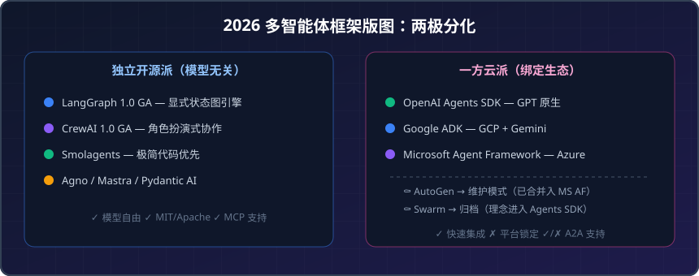
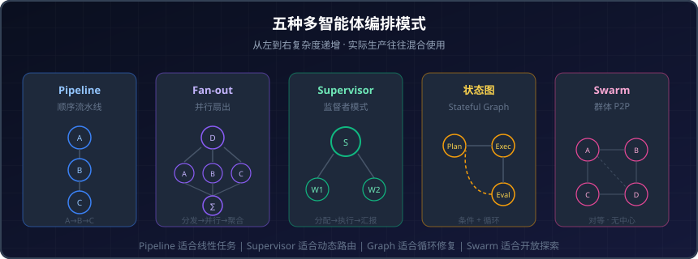

从单 Agent 到多 Agent：2026 协作框架选型、架构模式与场景落地全景
序言：单 Agent 不够用了
你可能已经用 Agent 自动回复客户、写代码、做数据分析。但当你试着让一个 Agent 既写代码、又测试、还部署——它开始"忘事"、"跑偏"、甚至"自己跟自己打架"。
这不是模型的问题，而是架构的问题。
单 Agent 架构在简单任务上表现优异，一旦面对真实企业级工作流——步骤多、需要回溯、不同环节需要不同专业能力——它就会系统性地崩溃。一份 2026 年的行业调研数据显示：采用多智能体编排的企业，错误率下降 60%，总拥有成本（TCO）下降 40%。
于是问题来了：多智能体框架那么多，到底该怎么选？架构模式有哪些？在你的具体业务场景里，应该怎么组合？
这篇文章帮你理清整张地图。
一、2026 年多智能体框架全景：从百花齐放到两极分化
过去两年，多智能体框架经历了一轮剧烈的洗牌。到 2026 年中，格局已经清晰分化为两大阵营：

▲ 2026 年中的多智能体框架版图：左侧是模型无关的独立开源框架，右侧是大厂"一方云"SDK。AutoGen 进入维护模式、Swarm 归档是标志性事件。
独立开源派（模型无关）
- LangGraph 1.0 GA：LangChain 出品，显式状态图引擎。2026 年初正式 GA（General Availability：正式版本，下同），成为复杂生产工作流的事实标准。
- CrewAI 1.0 GA：角色扮演式多智能体框架，极低门槛（~20 行 Python 出原型），2026 年初也完成 GA。
- Smolagents：HuggingFace 出品，保持 <1000 行核心代码的极简路线，适合研究和轻量场景。
- Agno / Mastra / Pydantic AI：各有细分定位——Agno 面向推理密集型、Mastra 面向 TypeScript 全栈、Pydantic AI 主打类型安全。
一方云派（绑定平台生态）
- OpenAI Agents SDK：从实验性 Swarm 项目毕业为生产级 SDK，最低摩擦入门、sandbox 工具、子 Agent 委托。绑定 GPT 生态。
- Google ADK：跨四种语言、GCP 原生、内置调试 UI、适合客户交互与事务型工作流。
- Microsoft Agent Framework：Semantic Kernel + AutoGen 合并而成，深度集成 Azure、Microsoft 365 生态。
关键信号
- AutoGen 正式进入维护模式——微软将其精华合并入 Agent Framework，不再单独迭代。
- OpenAI Swarm 归档——其设计思想被吸收进 Agents SDK 的 handoff 机制。
- Google A2A 协议 50+ 合作伙伴加入；Anthropic MCP SDK 月下载量达 9700 万次。
这意味着：如果你今天还在用 AutoGen 或 Swarm，是时候做迁移规划了。
二、六大框架核心对比：一张表看清差异
| LangGraph | CrewAI | OpenAI Agents SDK | Google ADK | Microsoft Agent Framework | Smolagents | |
|---|---|---|---|---|---|---|
| 抽象层级 | 低（显式图） | 高（角色定义） | 中（函数式） | 中高 | 中高 | 极低（代码优先） |
| 控制流 | 确定性 + 条件分支 | 自主 + 顺序 | 委托 + handoff | 事件驱动 | 工作流引擎 | 代码即流程 |
| 上手时间 | 4-6 小时 | 45 分钟 | 1-2 小时 | 2-3 小时 | 3-4 小时 | 30 分钟 |
| 生产可观测性 | LangSmith（完整） | 有限 | OpenAI Dashboard | Cloud Trace | Azure Monitor | 无内置 |
| Token 效率 | 高（精确控制） | 较低（-23%） | 中 | 中 | 中 | 高 |
| 模型锁定 | 无 | 无 | GPT 系列 | Gemini 优先 | Azure OpenAI 优先 | 无 |
| 协议支持 | MCP | MCP | 原生工具 | A2A + MCP | MCP | MCP |
| 许可证 | MIT | MIT | 私有 | Apache 2.0 | MIT | Apache 2.0 |
三、性能实测数据：2.4 倍速度差的真相
在选框架时，"感觉"不如数据。以下是 2026 年多份独立基准测试的关键发现：
LangGraph vs CrewAI
| 指标 | LangGraph | CrewAI | 结论 |
|---|---|---|---|
| 执行速度 | 快 2.4 倍 | 基准 | 图级并行 + 最小化 prompt 开销 |
| Token 消耗/输出词 | 基准 | 少 23% | CrewAI 的 system prompt 更紧凑 |
| p95 延迟 | 较高 | 低 38%（vs AutoGen） | 对延迟敏感场景 CrewAI 更优 |
| 任务完成可靠性 | 高（状态回滚） | 中高（无 mid-run 可视） | 涉及金钱/合规首选 LangGraph |
| 原型搭建时间 | 4-6 小时 | 45 分钟 | 验证想法首选 CrewAI |
核心 Insight
- 速度 ≠ 效率：LangGraph 跑得快是因为图级并行与精确控制，但初始工程投入大；CrewAI 每个 token 的信息密度更高，但运行时的自主协商会引入不确定性。
- 选错的代价：选 CrewAI 做复杂生产流水线 → 后期调试痛苦、状态不可追溯；选 LangGraph 做快速验证 → 前期搭建成本吃掉时间窗口。
四、五种多智能体编排模式：每种都有最佳与反模式
不管用哪个框架，多智能体协作的底层逻辑都遵循几种经典编排模式。理解模式比记框架 API 更重要——框架会迭代，模式是永恒的。

▲ 五种核心编排模式：从左到右复杂度递增。实际生产系统往往混合使用 2-3 种模式。
模式一：顺序流水线（Pipeline / Sequential）
Agent A → Agent B → Agent C → 最终输出
- 适用：每个步骤的输出是下一步的输入，无需回溯。如：调研→撰写→审校。
- 反模式：步骤间有强依赖且需要反复修改时——流水线会导致"瀑布式返工"。
- 框架对应：CrewAI
sequentialprocess、LangGraph 线性图。
模式二：并行扇出（Fan-out / Broadcast）
┌→ Agent A ─┐
Dispatcher ├→ Agent B ─┼→ Aggregator → 输出
└→ Agent C ─┘
- 适用：同一任务需要多视角处理后合并。如：多源数据采集、多模型投票/辩论。
- 反模式：Agent 之间存在数据依赖——并行执行会产生不一致。
- 框架对应：LangGraph 分支节点、CrewAI
asynctasks。
模式三：监督者模式（Supervisor / Manager-Worker）
Supervisor ──分配──→ Worker A
──分配──→ Worker B
←─汇报─── Worker A
←─汇报─── Worker B
──→ 最终决策
- 适用：任务需要动态分配、结果需要质量把关。如：客服升级路由、代码 review 流程。
- 反模式：Supervisor 成为瓶颈——所有通信都必须经过它，高并发下延迟飙升。
- 框架对应：LangGraph supervisor pattern、OpenAI Agents SDK handoff。
模式四：状态图（Stateful Graph）
Start → Plan → Execute ←──循环──→ Evaluate → Done
↑ ↓
└──── Retry ─────────┘
- 适用：有条件分支、循环、人工介入点的复杂工作流。如：代码生成→测试→修复循环。
- 反模式：简单线性任务——状态图的复杂度是不必要的负担。
- 框架对应：LangGraph 的核心心智模型，天然支持。
模式五：群体模式（Swarm / Peer-to-Peer）
Agent A ←→ Agent B
↕ ↕
Agent C ←→ Agent D
- 适用：开放式探索、创意发散、无明确指挥链。如：头脑风暴、多角色辩论。
- 反模式：需要确定性输出——群体模式的结果不可预测且难以复现。
- 框架对应：原 OpenAI Swarm 理念、CrewAI 的 agent delegation。
模式选择决策树
问自己三个问题：
- 任务有确定的步骤顺序吗？ → 有 = Pipeline；无 = 继续
- 需要动态路由或质量把关吗？ → 需要 = Supervisor；不需要 = 继续
- 步骤之间有循环/条件依赖吗？ → 有 = 状态图；无 = Fan-out 或 Swarm
五、通信协议层：MCP vs A2A vs ACP
框架解决的是"如何在一个系统内编排"，但当 Agent 跨组织、跨平台协作时，需要统一的通信协议。2026 年的三个主角：
| 协议 | 发起方 | 解决什么 | 类比 |
|---|---|---|---|
| MCP | Anthropic | Agent ↔ 工具/数据源 | USB 接口 |
| A2A | Agent ↔ Agent（跨平台） | HTTP 协议 | |
| ACP | IBM/BeeAI | Agent 能力发现 + 协商 | DNS + 握手 |
简单来说：
- MCP 让 Agent 调用外部工具变得标准化（SDK 月下载 9700 万次）。
- A2A 让不同厂商/不同框架的 Agent 之间直接对话（50+ 合作伙伴）。
- ACP 更新，定位在能力注册和协商层面。
如果你要做企业级多智能体系统，MCP + A2A 的组合已经是 2026 年的事实标准。关于 MCP 和 A2A 的深度对比，可以参考 MCP vs A2A 协议深度解读。
六、四大场景选型指南
理论讲完了，回到你的真实需求。以下是四个最高频场景的选型建议：
场景一：智能客服（多轮对话 + 升级路由）
| 需求 | 推荐 |
|---|---|
| 编排模式 | Supervisor（路由） + Pipeline（处理链） |
| 首选框架 | LangGraph（确定性路由 + checkpoint 回溯） |
| 备选 | Google ADK（GCP 原生 + 事务型优势） |
| 关键考量 | 需要人工接管点、对话状态持久化、合规审计 |
为什么不选 CrewAI：客服场景需要极高的确定性和可追溯性，CrewAI 的自主协商模式在"钱和合规"相关场景风险过高。
场景二：软件开发工作流（写代码 → 测试 → 修复）
| 需求 | 推荐 |
|---|---|
| 编排模式 | 状态图（循环修复） + Supervisor（Review） |
| 首选框架 | LangGraph（天然支持循环和条件分支） |
| 备选 | CrewAI（快速原型阶段） |
| 关键考量 | 代码执行沙箱、错误回滚、token 成本控制 |
软件开发天然需要"写→跑→看结果→改"的循环，这正是状态图模式的主场。
场景三：研究与内容生成（调研 → 撰写 → 编辑）
| 需求 | 推荐 |
|---|---|
| 编排模式 | Pipeline + Fan-out（多源调研） |
| 首选框架 | CrewAI（角色定义直觉、上手快） |
| 备选 | Smolagents（研究场景、极简） |
| 关键考量 | 快速出结果 > 确定性；创意 > 合规 |
为什么 CrewAI 在这里是首选：研究与写作场景对"确定性"要求较低，但对"快速迭代"和"角色分工直觉性"要求高——正好发挥 CrewAI 的优势。
场景四：金融风控与智能营销（多维度分析 + 决策）
| 需求 | 推荐 |
|---|---|
| 编排模式 | Hierarchical（分层决策） + Fan-out（多源验证） |
| 首选框架 | LangGraph / Microsoft Agent Framework |
| 备选 | OpenAI Agents SDK（快速集成 GPT 能力） |
| 关键考量 | 审计日志、决策可解释性、合规审批流 |
金融场景的核心诉求是可审计、可回溯、可解释。任何"自主协商"式的框架在这里都是风险。
七、落地避坑：五个血泪教训
在跟多个企业团队交流后，总结出最常见的五个坑：
-
"先选框架再想需求"——反了。先画出你的工作流程图、识别模式，再匹配框架。不然你会在框架的限制里扭曲需求。
-
低估 Agent 间的"误差放大"效应——单个 Agent 95% 准确率，串联 5 步后只剩约 77%。每多一跳，都要加验证节点。
-
忽视可观测性——多智能体系统最难调的不是单个 Agent，而是 Agent 之间的交互。LangSmith、Langfuse 这类工具不是锦上添花，是生存必需品。详细讨论见 Langfuse 可观测性指南。
-
过早优化 token 成本——先跑通再省钱。很多团队在原型阶段就纠结 token 效率，结果搭建速度慢了 3 倍，最后发现需求本身就变了。
-
把"一方云 SDK"当万能药——OpenAI Agents SDK 或 Google ADK 确实上手快，但一旦你需要混合模型（比如用 Claude 做推理、用 GPT 做生成），绑定平台的 SDK 立刻变成枷锁。
八、选型决策流程图
如果你只看一张图就做决定，这是我推荐的决策路径：
你的工作流有循环/条件分支吗？
├─ 是 → LangGraph
└─ 否 → 你的任务需要确定性和可审计吗？
├─ 是 → LangGraph / Microsoft Agent Framework
└─ 否 → 你需要快速出原型吗？
├─ 是 → CrewAI
└─ 否 → 你绑定了某个云平台吗？
├─ OpenAI 生态 → Agents SDK
├─ GCP 生态 → Google ADK
├─ Azure 生态 → Microsoft Agent Framework
└─ 都不绑 → LangGraph 或 CrewAI
九、未来展望：2026 下半年的三个趋势
-
A2A 协议走向主流——跨框架、跨平台的 Agent 互操作正从 Demo 走向生产。你现在选框架时，务必确认它是否支持 A2A。
-
"编排即代码"取代"编排即配置"——Smolagents 和 Pydantic AI 代表的趋势：与其用 YAML/JSON 配置编排逻辑，不如直接用 Python 写，利用类型系统和 IDE 的全部能力。
-
成本压缩成为竞争轴——当多智能体从"能跑"进入"要省"阶段，token 效率、缓存策略、推理模型降级（小模型干简单活、大模型干关键决策）将成为实际竞争力。
小结
多智能体协作不是"用不用"的问题，而是"怎么用对"的问题。
- 模式先于框架：先搞清楚你要 Pipeline、Supervisor 还是状态图，再选工具。
- LangGraph 是复杂生产的首选，代价是学习曲线陡峭。
- CrewAI 是快速原型的首选，代价是运行时不透明。
- 一方云 SDK 适合生态绑定者，代价是灵活性。
- MCP + A2A 是通信层的标配，早规划比晚迁移划算。
- 可观测性不是可选项，是多智能体生存的基础设施。
别让"框架焦虑"阻碍你动手。先用 CrewAI 跑通想法，确认有效后再用 LangGraph 重写生产版——这是 2026 年最务实的路径。
免责声明
本文为技术选型参考，所涉基准数据来自公开独立测试，不同负载和模型组合下结果可能有差异。文中提及的框架版本和功能以 2026 年 6 月为准，请读者参考时注意时效性，结合自身场景独立评估。
参考来源
- CrewAI vs LangGraph: Multi-Agent Benchmark Shows 2.4x Speed Gap - MarkAICode
- LangGraph vs CrewAI: Multi-Agent Performance and Cost in Production 2026 - MarkAICode
- Multi-Agent Orchestration Frameworks - Accio Market Survey 2026
- Open-Source Agent Frameworks: 5 Compared 2026 - Digital Applied
- AI Agent Frameworks Compared 2026 - Hashnode/Effloow
- Multi-Agent Orchestration Patterns: Complete Guide 2026 - Fast.io
- Multi-Agent AI Systems in Production: Architecture Patterns at Scale - AImagicx
- The best AI agent frameworks in 2026 - LangChain
- Building a Dynamic Multi-Agent Enterprise Platform - Oracle AI Blog
- LLM-Based Multi-Agent Orchestration: A Survey - MDPI/Preprints
内容已为符合授权要求进行改写与归纳。
相关阅读
- MCP vs A2A 协议深度解读
- 企业 AI Agent 部署实战指南
- 从 LLM 到 Agent 的范式迁移
- Langfuse 可观测性指南
- Agent 治理与可观测性的隐性成本
- Dify vs Coze vs RAGFlow vs n8n vs FastGPT 对比
推荐搭配装备
善其事，利其器。以下硬件能最大化你的AI体验👇
🔗 通过以上链接购买可支持本站持续运营 🙏